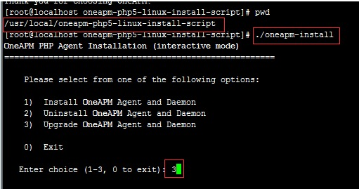
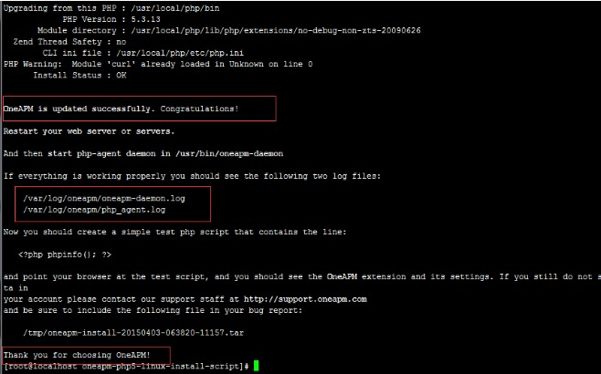
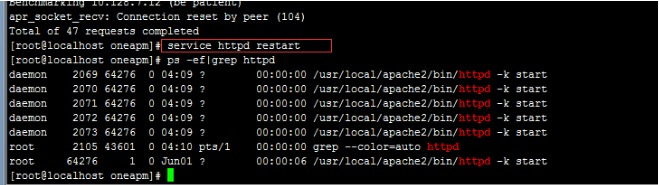

update agent
随着 PHP 探针功能的增加，用户需要更新探针，在这里对探针的更新步骤进行说明。
- 第一步：删除当前 PHP 探针的 tar 包和解压目录
命令：rm -rf oneapm-php5-linux-install-script/
命令：rm -rf OneAPMphp_Agent{ver}.tar.gz
其中{ver}为旧版本号
- 第二步：将下载的最新 PHP 安装包放入某个目录下，并解压缩
命令：tar -xzvf OneAPM_php_Agent_latest.tar.gz
- 第三步：进入 OneAPM 的解压目录，选择安装即可。（PHP Agent 更新只需删除之前的探针文件然后重新安装新版本探针即可）
命令：cd oneapm-php5-linux-install-script
命令：./oneapm-install install

回车

- 第四步：重启PHP动服务器(例如 Apache、PHP-FPM)

更新升级成功